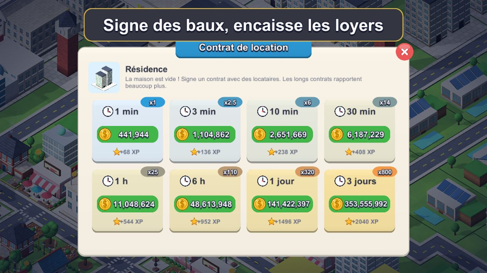
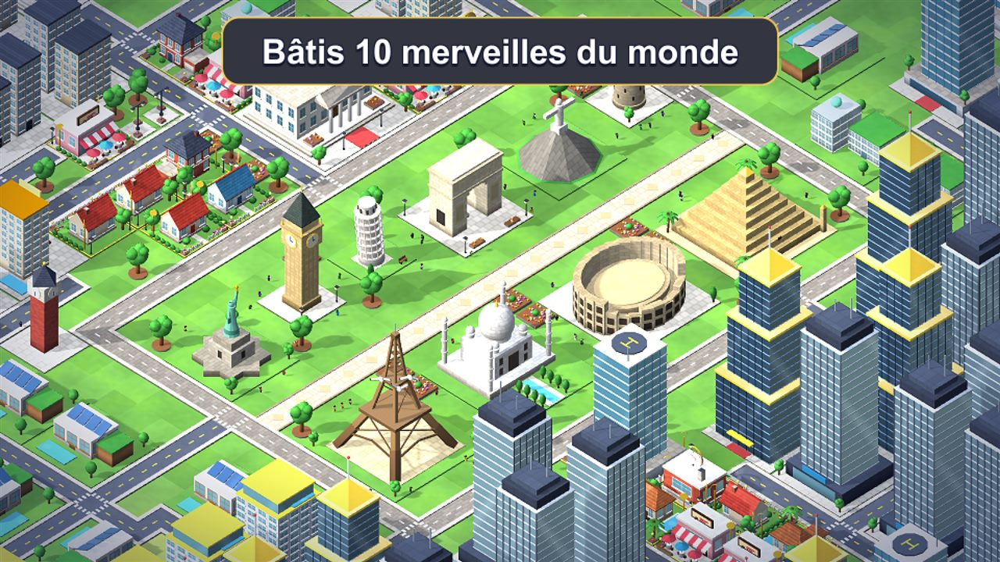

Les city builders classiques te manquent ? Découvre Money City
Vers 2010, des millions de personnes jouaient à des city builders sociaux sur Facebook comme Millionaire City, CityVille et SimCity Social. Tu construisais une ville, tu ramassais les pièces de tes maisons, tu agrandissais ton terrain et tu décorais chaque recoin. Beaucoup de ces jeux ne sont plus disponibles, mais on se souvient facilement de ce qu'ils faisaient ressentir. Money City est un jeu nouveau et original, conçu pour celles et ceux à qui ce style de jeu manque.
Une construction simple, un petit moment de satisfaction à chaque fois que tu encaissais de l'argent, et une ville qui grandissait peu à peu, de quelques maisons jusqu'à une ligne de gratte-ciel. Tu pouvais jouer deux minutes ou toute une soirée, et il y avait toujours une raison de revenir.
Comment Money City le fait revivre
Money City est un jeu de construction de ville et de gestion (tycoon) cosy pour Android. Tu construis des maisons, tu signes des contrats de location de 1 minute à 3 jours, tu encaisses le loyer d'un simple toucher et tu transformes un petit village en mégapole. Tu achètes de nouveaux terrains sur une île à cinq régions, tu améliores tes bâtiments jusqu'à 5 étoiles, tu décores avec des parcs et des statues et tu construis 10 merveilles du monde qui augmentent tes revenus.
Ce qui change aujourd'hui
Money City se joue en solo et fonctionne hors ligne. Pas besoin de compte Facebook, d'amis à qui envoyer des demandes ni de connexion internet. Les publicités sont facultatives : tu n'en regardes une que lorsque tu veux un bonus. Le jeu est disponible en 12 langues et démarre dans la langue de ton téléphone.

Signe des baux, encaisse les loyers

Bâtis 10 merveilles du mondeExplore 5 régions uniques
Questions fréquentes
Money City a-t-il un lien avec Millionaire City, CityVille ou SimCity Social ?
Non. Money City est un jeu original créé par un développeur indépendant. Il n'est ni affilié, ni approuvé, ni lié à ces jeux ou à leurs propriétaires.
Money City ressemble-t-il aux city builders classiques de Facebook ?
Il partage la même idée relaxante : construire une ville et encaisser les loyers de tes bâtiments, avec des fonctionnalités mobiles modernes comme le jeu hors ligne, les contrats de location, cinq régions et des merveilles du monde.
Ai-je besoin de Facebook ou d'amis pour jouer à Money City ?
Non. Money City est un jeu solo. Tu peux jouer seul et hors ligne.
Où puis-je jouer à Money City ?
Money City est disponible sur Android via Google Play.
Millionaire City, CityVille et SimCity Social sont des marques de leurs propriétaires respectifs. Elles sont mentionnées uniquement pour décrire un style de jeu. Money City n'est ni affilié à ces jeux ou à leurs propriétaires, ni approuvé par eux.